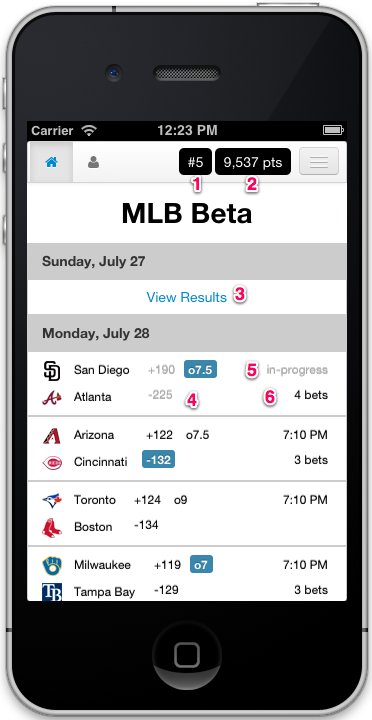
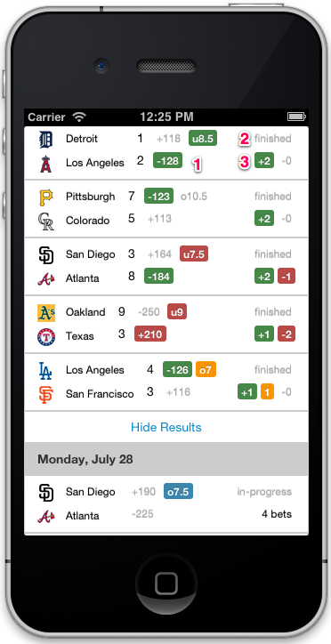
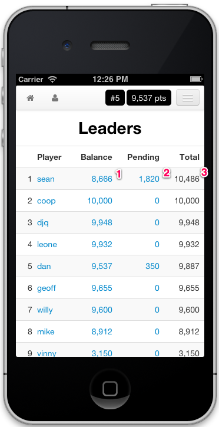
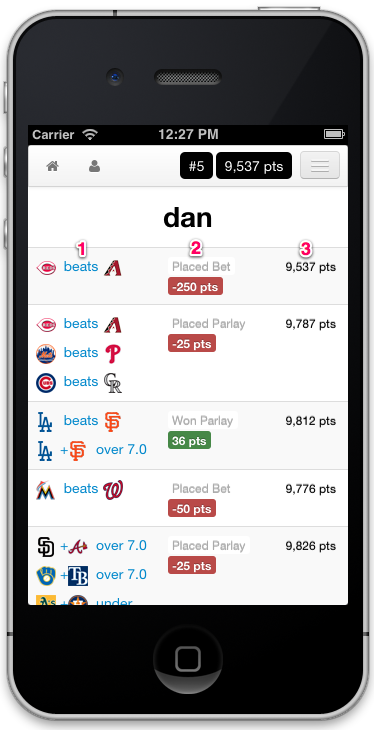
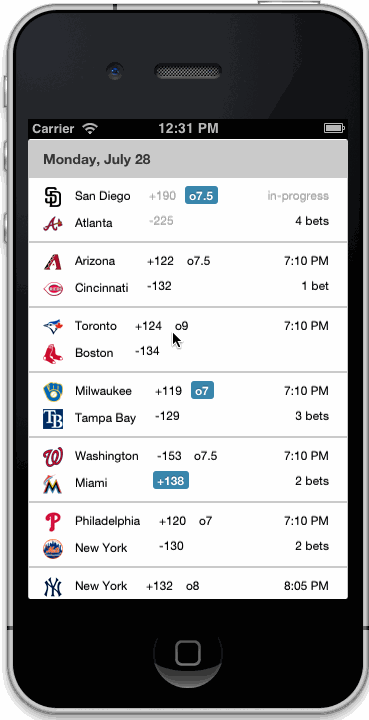
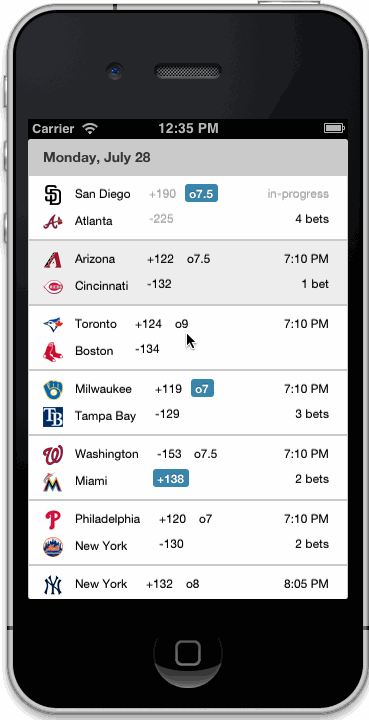
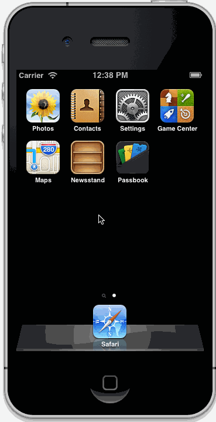

Fantasy Sportsbook
Creating a new type of game by combining my favorite elements of sportsbooks and fantasy sports.
Disclaimer Fantasy Sportsbook does not involve any money and nothing of value is ever wagered. All "points" are imaginary and how leagues may or may not award winners at the end of the season is entirely up to them and completely independent of Fantasy Sportsbook.
Fantasy Sportsbook is not a gambling site.
Introduction
Every fall, football fans dive into two different games: one on the field and one online. Both benefit from the other. The online game comes in two varieties: sportsbooks and fantasy football. For different reasons, I stay away from both, but I can't go out and watch a football game without hearing a lot about both, so I borrowed my favorite elements from each to create a new game called Fantasy Sportsbook.
Downsides of Sportsbooks
Whether at a casino or online, sportsbooks rake in money. They create lines to entice bets and guarentee their bottom-line all while charging a price to play (the juice). The more people playing: the more money they make, and because the odds are stacked against the better, the more you play: the more likely you lose. And when you lose, your money disappears into a faceless giant.
Unless you and your friends bet on the same game, sportsbooks also lack shared experience and competition. It's your money and your agony/joy. Onlookers may be impressed by your large bets but unless they share your payout, they don't share your experience.
Downsides of Fantasy Football
On the other side, fantasy football thrives on shared experience: people grouped together in friendly competition. If an NFL game is on, everyone has someone to cheer for or against and a friend to brag to later, but its landscape is lopsided to the beginning of the season. Have a good draft: have a good year. All but a handful of players are eliminated on or before week 13, and it's finished before the actual playoffs begin. Fantasy Football players are more excited about Week 1 than the Super Bowl.
Also, drafting and cheering for individual players is off-putting inside a team-driven sport like football, and fantasy football simply doesn't work for college football's large number of players with incredibly mismatched talent.
The Rules
You can probably see where I'm going: people grouped together in friendly competition betting imaginary "points". Here are the rules:
- Upon joining the league, a player is provided 10,000 points
- Players can bet these imaginary points on a handful of different results
- Players can group these bets to exponentially steadily increase the points they could earn
- To encourage betting, there's no juice and leagues can increase the payouts
- Players can view everyone's finished/pending bets as well as the current leaderboard
- Since players can see one another's bets, players are allowed to cancel a bet before they start with a minimal penalty.
- At the end of the season, the player(s) with the most points wins
It's that simple. If leagues want to award the winner(s) a prize, they can but it's their choice and completely separate from Fantasy Sportsbook. Nothing of value is ever bet or gambled on Fantasy Sportsbook.
Screenshots
Since football season hasn't started yet, I'm beta testing the application with Major League Baseball, but the design works the same for any sport. In the following screenshots, features are numbered in red and referenced in the explanations underneath.
Dashboard

- Your current place among all the players
- Your available point balance
- View completed games and bets
- The game's bets: your bets are blue, gray bets are closed, black bets are open
- Game status or game start time
- Total number of bets involving this game among all players

- Wagers for this game: wins are green, losses are red, pushes are orange.
- Game status
- Number of winning, losing, and pushed bets among all players
- Hide the completed games and just view in-progress or future games
Leaderboard

- Remaining available points
- Points placed on pending bets
- Balance + Pending. This number determines your rank.
Balancesheets
To provide transparency and an explanation of why someone is winning and others are badly losing, the application displays every change that occurs to someone's balance.

- Reason for the change
- Amount of the change. Spending points is red. Gaining points is green.
- The remaining balance
Placing a Bet
- Select the game
- Select the terms
- Set the bet
- Place the bet

Placing a Parlay
A parlay groups multiple bets together, exponentially raising the payout also making them more difficult to win.
- Select a game
- Select the terms
- Select more games and terms (watch the payout grow)
- Set the bet
- Place the bet

Mobile Web App
The application is not a native "iPhone Application", but it can behave like one by using the "Add to Home Screen" action.

Wrap-Up
I'm proud of the mobile interface: lots of information cleanly displayed in a small space. Placing bets is simple and hopefully not prone to error. If I ever make it public, I'll likely remove the logos and limit references to trademarked names.
I'm looking forward to seeing if it helps the casual fan become more interested in games and whether seasoned bettors receive a reasonable thrill while limiting their overall risk and losses. It should be a fun season of football.
If you're going to lose, lose to your friends.
Images and logos used in the screenshots on this page are property of Major League Baseball